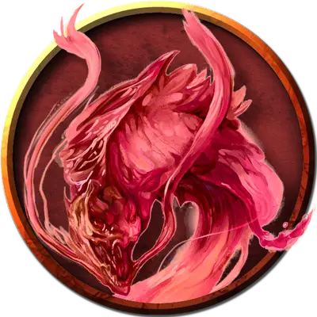

Винная аномалия
Wine Weird
Большой Элементаль, нейтральный

Класс Доспеха 13
Хиты 58 (9к10 + 9)
Скорость 0 футов, плавая 60 футов
| мод | спас | ||
|---|---|---|---|
| СИЛ | 17 | +3 | +3 |
| ЛОВ | 16 | +3 | +3 |
| ТЕЛ | 13 | +1 | +1 |
| мод | спас | ||
|---|---|---|---|
| ИНТ | 11 | +0 | +0 |
| МДР | 10 | +0 | +0 |
| ХАР | 10 | +0 | +0 |
Сопротивление урону огонь; дробящий, колющий, рубящий от немагических атак
Иммунитет к урону яд
Иммунитет к состояниям сбивание с ног, паралич, отравление, опутанность, истощение, захват, бессознательность
Чувства слепое зрение 30 футов, пассивное Восприятие 10
Языки Акван
Опасность 3 (700 опыта)
Бонус мастерства +2
Среда обитания Город, Подземье
Особенности
Языки. — понимает Акван, но не говорит.
Невидимость в воде. Винная аномалия невидима, если полностью погружена в воду.
Привязка к воде. Винная аномалия умирает, если покидает воду, к которой привязана, или если эта вода уничтожается.
Действия
Сжимание. Рукопашная атака оружием: +5 к попаданию, досягаемость 10 футов, одно существо. Попадание: Дробящий урон 13 (3к6 + 3). Если размер цели не больше Среднего, она становится схваченной (Сл высвобождения 13) и подтягивается на 5 футов к винная аномалии. Пока цель схвачена, она опутана, винная аномалия пытается её утопить, и аномалия не может сжимать другую цель.